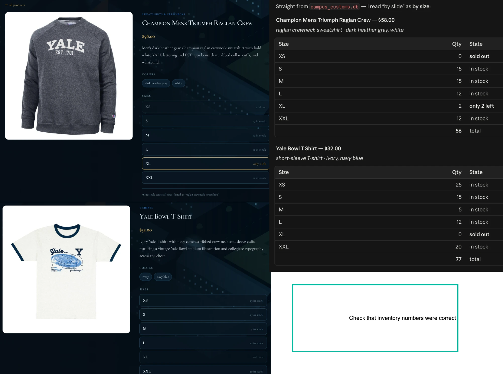
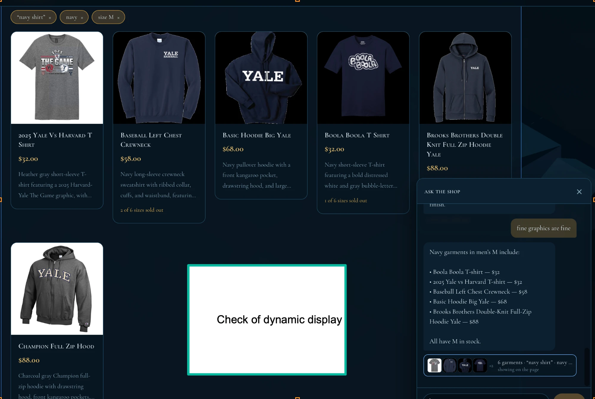
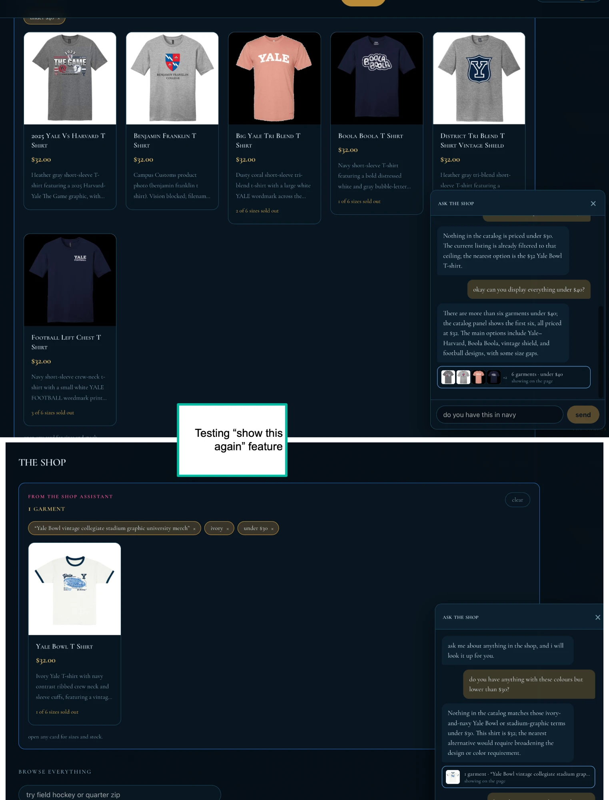

Three checks run against the live application. Each is described below, with
a reading of what the screenshot actually shows and why it demonstrates the
thing being checked. Screenshots are in app_check_images/.
Asked the shop for inventory on two named garments, then opened each
product page and compared both against the inventory table
read directly.
| Size | Champion Mens Triumph Raglan Crew · $58 | Yale Bowl T Shirt · $32 |
|---|---|---|
| XS | 0 — sold out | 25 |
| S | 15 | 15 |
| M | 15 | 5 |
| L | 12 | 12 |
| XL | 2 — only 2 left | 0 — sold out |
| XXL | 12 | 20 |
| Total | 56 | 77 |
The screenshot is a side-by-side: the running application on the left, the figures read out of the database on the right.
campus_customs.db directly, size by size, with totals.The two columns are independent: one is what the application renders to a shopper, the other is what the database contains. They can be read against each other cell by cell, and every cell agrees — six sizes for each of two garments, both prices, and both totals.
The two disagreements that would matter most are the ones the screenshot makes easiest to see. XS on the Raglan and XL on the Bowl tee are zero in the database, and both appear struck through rather than merely absent — the shop is not hiding what it cannot sell. XL on the Raglan holds 2, and the page says only 2 left rather than in stock, so a true count is not being rounded into a comfortable one.

Asked the assistant for a kind of garment with constraints attached, and watched whether the shop page itself rearranged — or whether the answer arrived only as text inside the chat window.
The garments are on the page, not in the chat. The reply is four lines of prose; the merchandise is six full cards in the grid behind it, which is where a shopper browses. The chat did not paste a gallery into the conversation — it put the result where the shop lives.
The chips show the question was parsed into structured filters, not matched as a string. Colour and size became separate, separately removable clauses. A shopper can now take size M off by hand without going back to the assistant, which is the behaviour of a control panel rather than a search box.
The reply names five garments while the page shows six, and says include rather than listing them all. That is the intended division of labour: the cards enumerate, and the assistant says only the part a picture cannot carry.

Ran several different searches in one conversation, scrolled back up the chat, and clicked an earlier result to put that set of garments back on the page.
Two moments from the same session, stacked.
The two captures show different results on the same page, and the second is not a fresh search — it is an earlier one restored. Everything that defined it came back together: its count, its single card, and all three of its original filter chips, including the unusual long query string that no one would retype.
The showing on the page marker moved. In the upper capture it sits on the under $40 row; in the lower it sits on the Yale Bowl row. The conversation keeps a record of every result and knows which one is currently in view, so a shopper can tell where they are among several.
The restored state is also still honest. Within it the assistant says plainly that nothing matches under $30 and that the shirt is $32 — a restored result reproduces what was found, not a more flattering version of it.

catalogue table — a placeholder in the course's own seed data,
not something the application wrote. The shop is displaying it verbatim,
which is the intended behaviour: descriptions are rendered exactly as stored
and never rewritten.